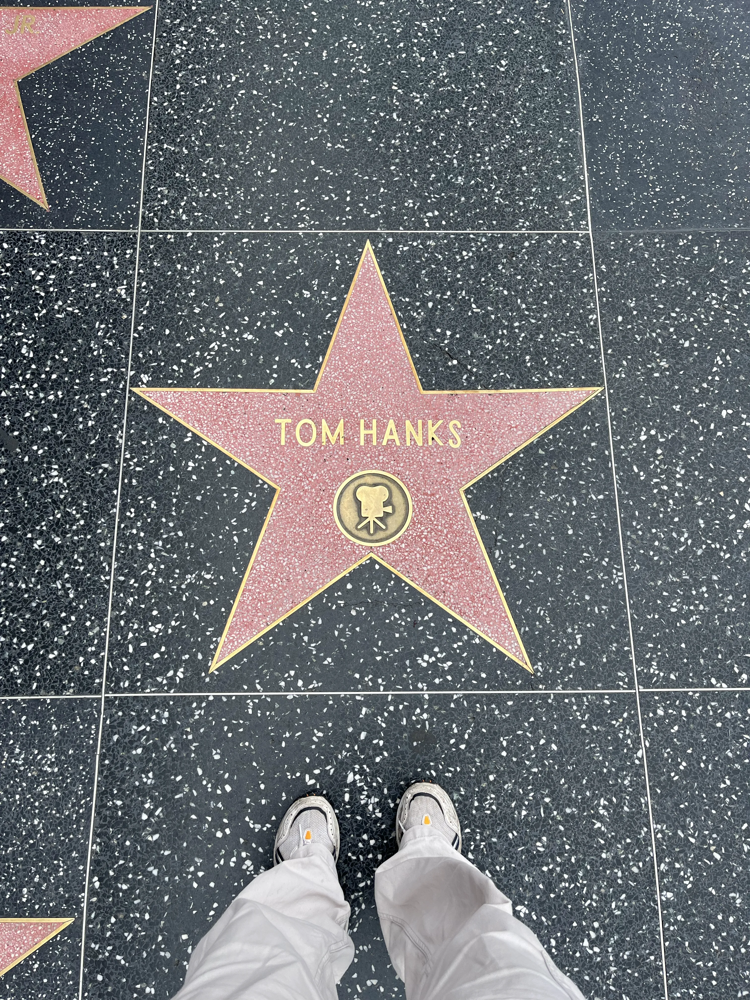
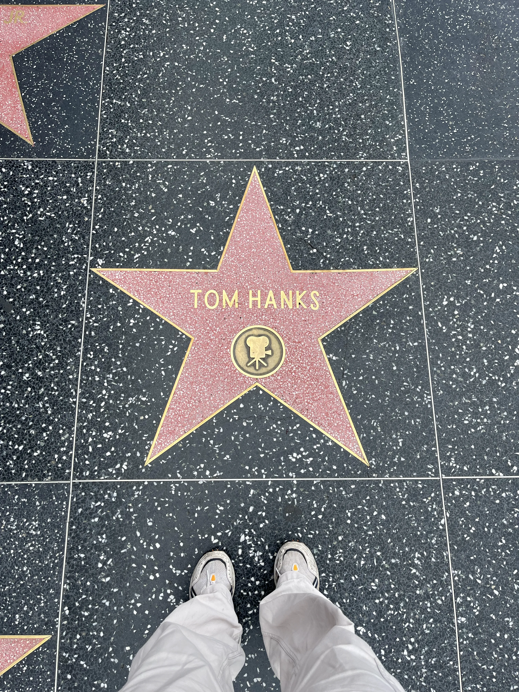
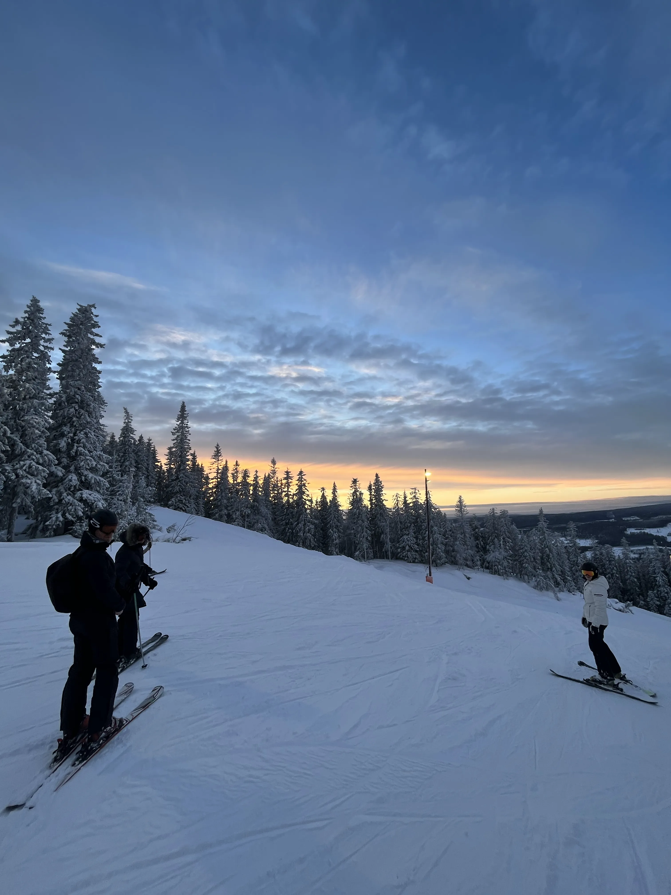
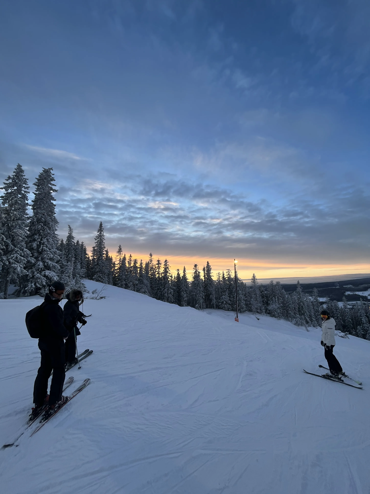

tilbage til temaer
03
Grundlæggende UX/UI
I team 3 får vi bedre forståelse for sammenhængen mellem brugere og brugeroverflader. Vi bliver introduceret til flere brugertests, der giver bedre indblik i produktet og den færdige løsnings effektivitet. I undervisningen tages fat i programmet Figma, hvis funktioner introduceres. Ligeledes gives en gennemgang af gestaltlove og rettigheder i forhold til bl.a. billeder og fonte. Teamet sikrer os de bedste værktøjer til den bedste research til produkt, og deraf en bedste forståelse og formidling af produkt. Det er også tema 3, der giver mulighed for at forstå designprocessen bedre for første gang
Opgaven: 03.01.01 Emnesite
Opgaven er til design og udvikling af site til eget valgfrie emne. Prototype laves i Figma, og skal være klikbar og testes med brugertests inden kodningsprocessen. Heraf udvikles wireframes/layoutdiagram til kodningsoverblik, ligeledes designprocessen med de givne redskaber, styletiles og moodboards. Siden indeholder mindst 3 sider og er responsiv, og der udvikles et favicon. Det færdige site testes i Lighthouse og valideres uden fejl, hvorefter det uploades på eget domæne.
Min løsning:
I tema 3 fik jeg skabt min egen hjemmeside på emnet rejser og rejseguides. Jeg havde selv rejst en del, og fik lavet et site, der mødte mine egne behov, men også min families og mine klassekammeraters i forhold til eget overblik til selvvalgt rejse, oplevelser og destinationer. Jeg fik udnyttet min nye viden på grid-opstilling, CSS og forståelse for at søge ny viden, der gjorde det muligt for mig at lave nogle dele af siden interaktive. Siden er kodet med HTML, CSS og JavaScript og har 5 sider med information og interaktive værktøjer.
Processen forløb rigtig meget i Figma, med det nye værktøj, vi skulle lære. Derfor fik vi udrettet en lo-fi/hi-fi løsning i Figma, som var klikbar og tilknyttet elementer og komponenter, der havde en rolle på sitet. Fra den kunne der laves brugertests til det endelige kodede site. Alt forarbejdet blev derfor lavet der, med moodboards, styletiles, user stories osv. Sitet tog også inspiration fra andre konkurrenter. Herefter kodet det endelige site udfra prototypen.
Da opgaven var meget åben og tog udgangspunkt i egen inspiration, fik jeg tilføjet meget af min egen viden på emnet. Siden er selvfølgelig også designet ud fra egne idéer, også gennem Figma, som lagde grundlag for alt forarbejdet. Egne billeder og oplevelser fylder siden og giver det personlighed.
De vigtigste færdigheder, jeg tog med fra tema 3:
- Figma og mine kompetencer indenfor programmet. Her udvikles både moodboard, sketches, lo-fi og hi-fi prototyper, wireframes, styletile, og resten af den visuelle ideudviklingsproces
- Undersøgelser og bestemmelse af målgruppe med user stories.
- Et udvalg af brugertests som tænke-højt-, 5-second- og lighthouse-tests.
- Forståelse for copy-right og rettigheder til billeder.
- Udvikling og design af favicon.
I tema 3 fik jeg en del mere erfaring indenfor kodningsdelen, og blev mere sikker i at tage ”svære” kodningsopgaver op. Det gav mening for siden at være interaktiv, og jeg fik derfor indarbejdet det med den viden, jeg samlede. Heraf blev jeg ligeledes bedre til grid-opstilling og forskellen mellem diverse elementer, og fremover ville jeg kunne tage fat i de rigtige elementer fra start af kodning.
Gå til hjemmesiden ->http://mayamaya.dk/kea/03_ux/01_kodet_site/index.html
Gå til Figma ->
 

 

På min hjemmeside fik jeg indarbejdet interaktive elementer på min ”lav overblik” side (se billede nr. 5 i scroll-billederne), der indsættes med koden til venstre. Billedet er taget fra koden, der koder for Destination og Land afsnittet. I det stadie af kodningsfærdigheder var der ikke nogen måde til at få siden til at huske det redigerede tekst, men det kan dog rettes med koden contenteditable, der blot lægger sig på div’en. Så alt indholdet er redigerbart, netop fordi den er lig med ”true” og derfor gældende. Det samme gør de efterfølgende elementer.
På forsiden (billede nr. 1 i scroll-billederne) fik jeg lavet en scroll-billede container, der indeholder en masse billeder fra mine rejser. Det gav netop mening, fordi der var mange, at samle dem i en container. Her er det overflow og white-space, der afgør, at billederne ikke flyder ud over containeren, så den afslører et nyt billede ved en scroll-funktion.